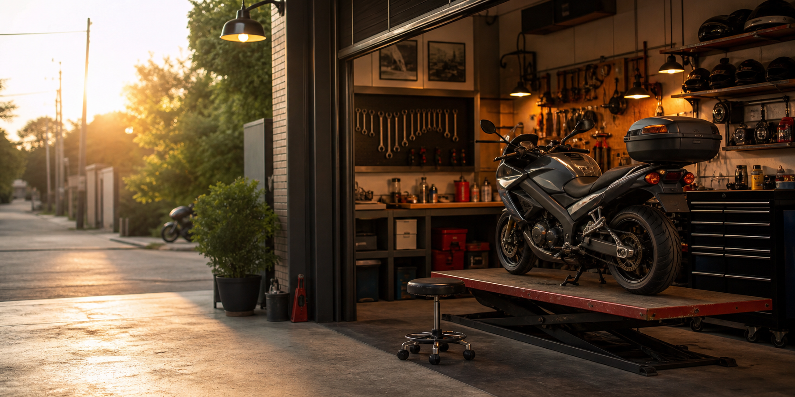

豊富な経験と確かな技術
数々の修理や整備を手掛けた確かな技術。真心こめてお客様の大切なバイクに安心と安全を提供致します。

千葉県 我孫子市
交換、整備、点検、車両購入など、
どなた様でも気軽に相談・依頼が出来る、
経験豊富で頼れるバイクショップ！
3つのポイント
数々の修理や整備を手掛けた確かな技術。真心こめてお客様の大切なバイクに安心と安全を提供致します。
初めていらっしゃる方や、バイク初心者の方でも安心して相談できるように努めております。
通勤や仕事で使用するスクーターから大型バイクまで、全てのジャンルのバイクに対応しております。些細な不調からカスタムまで、遠慮なくご相談下さい！
お店紹介
バイク屋は、初めて行く人にとって少し入りづらい場所に見えることがあります。料金目安が分からない、どこまで相談していいか分からない、スクーターを見てもらえるのか不安になる人も少なくありません。
だからこそ、このページでは来店前に知りたい情報を整理しています。仕事や通勤で使うバイクなど、日常で使うバイクの困りごとも相談しやすいお店として紹介します。
安全に乗るための整備、点検、消耗品交換、ちょっとした不安の相談やカスタムの相談まで。身近なバイク生活を支える整備店として、店主の人柄や対応の雰囲気まで伝えていきます。
相談できること
エンジンまわりの不調、オイル交換、ブレーキ、バッテリー、タイヤなど、日常的な整備から各種部品交換まで相談できます。走っていて気になる音や違和感も、まずは気軽に相談できます。
これからバイクを探したい方や、用途に合う車両を選びたい方の相談にも対応。通勤、買い物、趣味のツーリングなど、乗り方に合わせた車両選びを相談できます。
見た目を変えたい、乗りやすくしたい、パーツを取り付けたいなど、バイクのカスタム相談にも対応。安全性や使いやすさも考えながら、自分らしい一台づくりを相談できます。
原因が分からない不調や、どこに相談すればいいか迷う内容もまずは相談できます。車種や症状、気になっていることを伝えるだけでも、次に何をすればよいか整理しやすくなります。
取材で見えた人柄と店主の想い
店主の想い
このページでは、取材前の段階で断定できない情報を無理に打ち出すのではなく、来店前に知りたい内容を整理しています。
店主の詳しい想い、得意分野、開業理由、初めて来る人へのメッセージは、取材後に本人の言葉を交えて追加していきます。
ポータル運営者が取材して感じたこと
運営者が実際に店主と話してみて感じたのは、初めての人でも声をかけやすい柔らかな人柄です。急な訪問でも笑顔でお出迎えしてくれました。
この仕事がとても好きな事がひしひしと伝わり、修理や整備や些細な相談にも真摯に向き合う姿勢が、仕事への熱意としてまっすぐに伝わってきました。
バイクに詳しくない人やショップに慣れていない人にとっては「店主がどんな人か少し見えること」自体が安心材料になると思い、ここに執筆しました。
整備担当者がコロコロ変わる大型店舗にはない魅力がここには沢山あり、行きつけのショップを探している人には特にベストマッチだと思います。
日常整備の相談先を探している地域の方や他の地域の方にも、是非届いてほしい一軒だと感じました！
FAQ
はい。バイクに詳しくない人でも相談しやすいお店として紹介しています。正式な問い合わせ方法や来店の流れは、取材後に掲載します。
現時点では確認中です。来店前の事前連絡を推奨する形で掲載予定ですが、正式な案内は取材後に更新します。
代表的な作業の料金目安や、見積もり時に確認したい内容は、店主確認後に掲載します。未確認の料金は断定して掲載しません。
車種、年式が分かれば年式、相談内容、症状、いつ頃から気になるか、希望日時を伝えると相談が進みやすくなります。タイヤ交換の場合は、タイヤサイズが分かるとさらにスムーズです。
スクーターや通勤バイクなど生活に近いバイクももちろん対応しております。お気軽にご相談下さい！
対応可否は確認中です。持ち込み部品や持ち込みタイヤについては、正式確認後に掲載します。
急な不調の相談可否、対応できる時間帯、緊急対応の範囲は確認中です。正式確認後に分かりやすく掲載します。
店舗基本情報
問い合わせ
初めての相談でも話が進みやすいよう、問い合わせ前に伝えるとよい情報をまとめています。